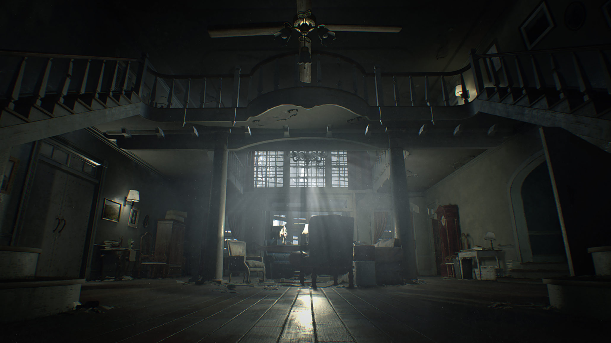
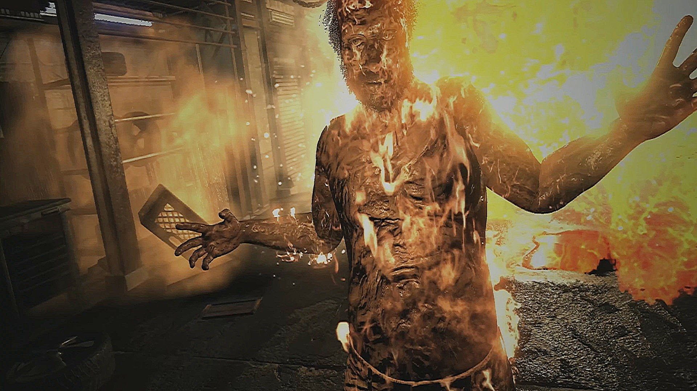

Resident Evil 7 takes some big risks with the long-running horror series. But even as some succeed and others fall flat, this new first-person take on the formula wisely remembers that it’s survival-horror adventure — composed of tense exploration and careful item-hunting — and not solely its action that made its early predecessors memorable.With one of the creepiest single settings since the Spencer Mansion and an enticingly bizarre mystery to unravel, this is the most fun I’ve had with a Resident Evil game in years.
The atmosphere in Resident Evil 7 is the strongest the series has seen in a long time, and that’s owed entirely to the eerie Dulvey plantation, to which the player character Ethan has been summoned by a cryptic email from his missing wife. If classic Resident Evil games were rooted in the zombie films of George A. Romero, this is Resident Evil in the tradition of The Texas Chainsaw Massacre, with all the gruesome imagery, dilapidated old shacks, and cannibalistic horrors that come with it.

Sometimes that makes for an interesting backdrop, especially as you begin to trace the residents of the Dulvey Mansion’s descent into savagery and uncover the way it’s manifested in their domestic life. Traces of humanity aren’t hard to find behind all the locked doors: old photographs, trophies for academic achievement, a discarded football helmet. Compared to the cold, medieval interior of the still-beloved Spencer Mansion, the Baker household actually feels like a lived-in space rather than a grandiose maze of traps and hidden laboratories, which is an interesting and more intimate change of scenery that focuses on something that the series has never fully explored before.
Other times, Resident Evil 7’s roots in “hillbilly horror” relies too heavily on overplayed tropes about rural America and begins to border on the cartoonish. The Bakers are disgusting, dysfunctional, and at times pretty laughable, but most of this is at least explained later on, which — without spoilers — satisfactorily avoids putting the blame entirely on their rural upbringing. But even with its faults, Resident Evil 7’s change in style and setting never fails to deliver a strong sense of place that makes frequent exploration and backtracking through the dingy Dulvey property and its secret underground lairs work without wearing out its welcome.

The setting’s only real failing is its puzzles, which were disappointingly rare and far too simple. Rather than hiding codes and passwords behind riddles or forcing some kind of threat or fail state on me if I entered in an incorrect solution as previous games have (think of the Armor Room puzzle from the first Resident Evil), Resident Evil 7 doesn’t even seem to try to make its obstructions interesting or challenging. I felt like I simply stumbled upon answers more than I did employed any kind of real problem-solving to get there.
The Baker family, like unstoppable tyrants with unpleasant personalities, are among the first enemies you’ll encounter, and they’re by far the most interesting. The first fight with Jack Baker had me both laughing hysterically and scrambling frantically for a way to defend myself, a winning combination that made the unpredictable encounter one of Resident Evil 7’s highlights. Jack’s patrolling of the mansion — at one point even bursting through a wall, Mr. X-style — actually felt like a real threat, even after I was armed with more than a knife. To survive, I needed to either flee or fend him off by unloading my handgun on him, which is a decision that can come back to haunt you.
But while the Bakers are the best enemies, there’s an extremely wide gap in quality between them and the only other prominent enemy type in Resident Evil 7. Throughout my roughly 10-hour journey, just about the only other enemy type I encountered were hulking, oil-black creatures called The Molded. They come in a few varieties: the standard Molded; the ones with a giant, warped arm reminiscent of classic tyrant designs; ones that crawl around; and heavyset ones that vomit acid. (There are also bugs in one area, but they serve more as obstacles to overcome than hostiles with distinct behaviors.) While visually repulsive and threatening enough to cause more than a couple of tense combat encounters, The Molded lost their ability to shock me very quickly — especially because the scenarios in which you encounter them are all so similar.

Most of Resident Evil 7’s tension comes from finding yourself in tough situations and struggling to adapt, since it’s all about scavenging for items and conserving what little ammunition and resources you do have. (In other words, classic Resident Evil style.) With limited inventory space and a familiar reliance on item boxes to manage your belongings, I found that constantly storing small amounts of handgun and shotgun ammo as I found it, granting myself a safety net of health-restoring green herbs, and keeping psychostimulants handy for tracking down well-hidden items was a welcome layer of micromanagement on top of every larger objective. I’m happy to see that core Resident Evil idea make a comeback in 7. But being forced to change up my survival tactics in the face of new, unpredictable enemies and situations throughout the campaign would have made the experience a lot scarier.
Resident Evil 7 grounds itself in elements that made the original great while still indulging in a risky new shift in style that both helps and hurts the beloved formula in equal measure. But it’s also the closest a numbered sequel has come to recapturing Resident Evil’s slow, but thrilling and atmospheric adventure game roots in a while — a welcome return that I truly hope to see more of in the future.